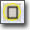
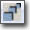
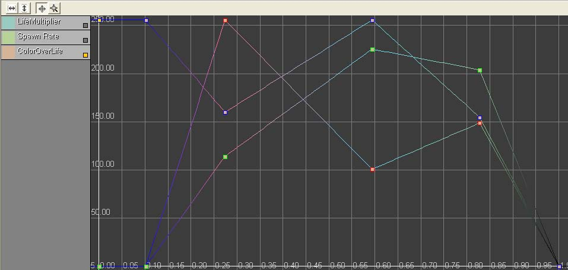
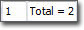
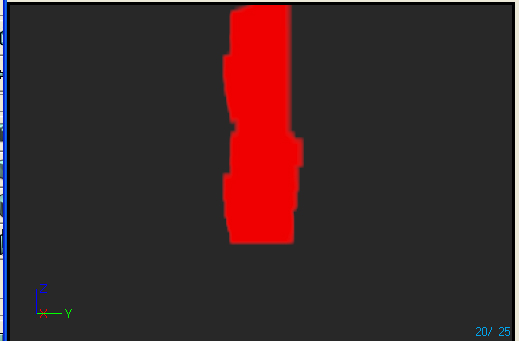

UDN
Search public documentation:
CascadeUserGuideCH
English Translation
日本語訳
한국어
Interested in the Unreal Engine?
Visit the Unreal Technology site.
Looking for jobs and company info?
Check out the Epic games site.
Questions about support via UDN?
Contact the UDN Staff
日本語訳
한국어
Interested in the Unreal Engine?
Visit the Unreal Technology site.
Looking for jobs and company info?
Check out the Epic games site.
Questions about support via UDN?
Contact the UDN Staff
UE3 主页 > 虚幻编辑器和工具 > 虚幻 Cascade 用户指南
UE3 主页 > 粒子 & 特效 > 粒子系统 > 虚幻 Cascade 用户指南
UE3 主页 > FX 美工人员 > 虚幻 Cascade 用户指南
UE3 主页 > 粒子 & 特效 > 粒子系统 > 虚幻 Cascade 用户指南
UE3 主页 > FX 美工人员 > 虚幻 Cascade 用户指南
虚幻 Cascade 用户指南
概述
打开 Cascade
Cascade 界面

- 菜单栏 (Menu Bar) - 可视化和导航工具。
- 工具栏 (Tool Bar) - 可视化和导航工具。
- 预览面板 (Preview Pane) - 显示了当前的粒子系统（包括在那个系统中包含的所有的发射器）。在 Sim(仿真) 工具条的控制选项中可以设定仿真的速度。
- 发射器列表 (Emitter List) - 这个面板包含了在当前的粒子系统中的所有发射器的列表，以及在这些发射器中的所有模块的列表。
- 属性面板 (Properties Pane) - 这个面板允许查看和修改当前粒子系统、粒子发射器或粒子模块。
- 曲线编辑器 (Curve Editor) - 这个曲线编辑器显示了在相对时间或绝对时间过程中所正在修改的属性。当多个模块被添加到曲线编辑器中，可以控制显示哪个模块(在本文档稍后会进行讨论)。
菜单条
编辑
- 重新生成最低 LOD (Regenerate lowest LOD) - 通过使用最高 LOD 值的预设百分数重新生成最低 LOD。
- 保存软件包 (Save Package) - 保存包含粒子系统的软件包。
视图
- 查看原点坐标 (View Origin Axes) - 开启在预览面板的世界远点显示轴标记。
- 查看粒子数量 (View Particle Counts) - 开启在预览面板中显示粒子系统中每个发射器的粒子数统计数据。
- 查看粒子事件数 (View Particle Event Counts) - 开启在预览面板中显示粒子系统中的每个发射器的粒子事件统计数据。
- 查看粒子时间 (View Particle Times) - 开启在预览面板中显示粒子系统中的每个发射器的粒子时间统计数据。
- 查看粒子距离 (View Particle Distance) - 需要说明。
- 查看几何体 (View Geometry) - 开启在预览面板中显示其中的静态网格物体。可以用于测试特定发射器效果，例如碰撞。
- 查看几何体 (View Geometry Properties) - 打开其中的几何体的属性窗口，它允许您修改它的属性并更改所使用的网格物体。
- 保存相机位置 (Save Cam Position) - 通过预览面板相机视角保存内容浏览器中粒子系统的缩略图。
- 保存动态半径 (Save Motion Radius) - 需要说明。
窗口
- 属性 (Properties)： - 开启显示属性面板。
- 虚幻曲线编辑器 (Unreal Curve Editor)： - 开启显示曲线编辑器。
- 预览 (Preview)： - 开启显示预览面板。
工具条
这也是个工具栏，如下所示： 这个工具条包含了以下控制项（在工具条上从左到右）：
这个工具条包含了以下控制项（在工具条上从左到右）：
| 图标 | 名称 | 描述 |
|---|---|---|
 | 重新开始仿真 (Restart Sim) | 这将会在预览窗口中重新开始仿真。 |
 | 在关卡中重启 (Restart in Level) | 这项将重新启动粒子系统及关卡中的任何该系统的实例。 |
| 在内容浏览器中查找 (Find in Content Browser) | 打开内容浏览器，然后选择当前粒子系统。 | |
 | 保存缩略图 (Save Thumbnail Image) | 通过预览面板相机的视角保存内容浏览器中的粒子系统的缩略图。 |
 | 切换轨道模式 (Toggle Orbit Mode) | 在围绕粒子系统进行轨道旋转或自由移动之间切换预览视口的相机。 |
 | 切换运动 (Toggle Motion) | 开启发射器模块中的任意运动效果。 |
 | 改变视图模式 (Change view mode) | 循环在预览面板中使用的视图模式。 |
|  | 开启边界 (Toggle Bounds) | 开启在预览面板中显示粒子系统的当前边界。 |
| 开启后期特效 (Toggle PostProcess) | 开启在预览面板中使用 cascade 后期特效链。 | |
 | 开启网格 (Toggle Grid) | 开启在预览面板中显示网格。 |
| 播放 (Play) | 在预览视窗中播放仿真。 | |
 | 暂停 (Pause) | 暂停仿真。 |
 | 设置仿真速度 (Set sim speed) | 循环整个现有仿真回放速度。 |
| 开启循环播放系统 (Toggle Loop System) | 对于没有设置为循环播放的发射器，这个选项将会强制使它们显示在预览视窗中。 | |
| 开启实时 (Toggle Realtime) | 在预览视窗中实时预览发射器。 | |
| 背景颜色 (Background Color) | 允许用户改变预览窗口的背景色。 | |
 | 开启线框球体 (Toggle Wireframe Sphere) | |
| 取消 (Undo) | 取消最后一步执行的操作。 | |
 | 重复 (Redo) | 重复上一个未完成的操作。 |
 | 复制最高LOD来重新生成最低 LOD (Regenerate lowest LOD duplicating highest) | 通过复制最高的 LOD 重新生成最低的 LOD。 |
 | 重新生成最低的 LOD (Regenerate lowest LOD) | 通过使用最高 LOD 值的预设百分数重新生成最低 LOD。 |
 | 跳转到最高 LOD 层次 (Jump to Highest LOD Level) | 加载最高的 LOD。 |
| 跳转到较高 LOD 层次 (Jump to Higher LOD Level) | 从当前 LOD 中加载下一个较高的 LOD。 | |
|  | 在当前 LOD 前面添加 LOD (Add LOD before current) | 在当前加载的 LOD 前添加一个新的 LOD。 |
| 在当前 LOD 后面添加 LOD (Add LOD after current) | 在当前加载的 LOD 后面添加一个新的 LOD。 | |
 | 跳转到较低的 LOD 层次 (Jump to Lower LOD Level) | 加载下一个较低的 LOD。 |
| 跳转到最低的 LOD 层次 (Jump to Lowest LOD Level) | 加载最低的 LOD。 | |
 | 删除 LOD (Delete LOD) | 删除当前加载的 LOD。 |
预览面板
预览面板将会为您提供一个当前粒子系统的渲染预览，就在它在游戏中进行渲染的时候出现。它可以提供有关对 Cascade 中的粒子系统进行的更改的实时反馈。除了完全渲染的预览之外，预览面板还可以在不带光照、贴图密度和线框视图模式中渲染，并显示诸如粒子系统的当前边界之类的信息。发射器列表
该发射器列表包含可以在 Cascade 中进行编辑的粒子系统中包含的所有粒子发射器。它是一个所有发射器水平排列的列表，其中每栏代表系统中包含的单个粒子发射器。每个栏都由一个发射器块及后续的很多模块组成。 这个发射器块如下所示： 以下是显示在发射器块上的按钮(从左到右)：
以下是显示在发射器块上的按钮(从左到右)：
 /
/  这个按钮将 启用/禁用 发射器。当启用了发射器时显示了第一张图片，当禁用了发射器时显示了第二张图片。请注意当发射器为禁用状态时，它将不再调用 Tick 或 Render 函数。
中间的按钮是发射器的渲染模式。点击它将会切换到另一个可用的渲染模式。支持以下图标：
这个按钮将 启用/禁用 发射器。当启用了发射器时显示了第一张图片，当禁用了发射器时显示了第二张图片。请注意当发射器为禁用状态时，它将不再调用 Tick 或 Render 函数。
中间的按钮是发射器的渲染模式。点击它将会切换到另一个可用的渲染模式。支持以下图标：
 | 发射器应该正常进行渲染。 |
 | 发射器在粒子的位置渲染十字线。 |
 | 发射器在粒子的位置渲染点。 |
 | 发射器不进行渲染。 |
 这个按钮将会发送相关的编辑器属性到曲线编辑器窗口(#4)。
在发射器中的每个模块以栏的形式出现在编辑器块的下方。以下是 ascade 中一个模块的图片：
这个按钮将会发送相关的编辑器属性到曲线编辑器窗口(#4)。
在发射器中的每个模块以栏的形式出现在编辑器块的下方。以下是 ascade 中一个模块的图片：
 右上方的图标是用于发送相关的模块数据到曲线编辑器中的按钮。右下方的图标是用于 启用/禁用 模块的按钮。（注意： 如果禁用在发射器之间共享的模块，则该模块将会在所有的发射器中被禁用!)
最后一个按钮仅出现在粒子可以在预览窗口中进行3D展现的模块中。
/
左边的图片预示着描画 3D 预览 (preview) 。右边的图片预示着它当前禁用。
右上方的图标是用于发送相关的模块数据到曲线编辑器中的按钮。右下方的图标是用于 启用/禁用 模块的按钮。（注意： 如果禁用在发射器之间共享的模块，则该模块将会在所有的发射器中被禁用!)
最后一个按钮仅出现在粒子可以在预览窗口中进行3D展现的模块中。
/
左边的图片预示着描画 3D 预览 (preview) 。右边的图片预示着它当前禁用。
曲线编辑器
添加一个模块曲线编辑器
将一个模块添加到 Graph Editor(曲线编辑器)是非常简单的。 在模块左侧的绿色方块将会把那个模块添加到曲线编辑器中。 在曲线编辑器中出现的模块的颜色是在模块创建时随机决定的。 要想改变它的颜色，可以打开您想修改的模块的属性窗口中的 Cascade 组的属性，并在那里设置颜色。操作曲线
在曲线编辑器条目处右侧出现的黄色的方盒切换控制是否为那个模块渲染渲染样条曲线。 右击这些条目其中的一个，您可以将其从曲线中删除。在曲线上创建点
注意在您增加多个点之前，您需要确定您正在编辑的 Distribution(分布曲线)的类型是'curve(曲线)'(比如DistributionFloatConstantCurve)。 为了在曲线编辑器中创建点，可以按住 Ctrl 键并左击样条曲线来设定您想要的值。 实现这个操作的最简单方法是通过使用上面讨论的复选框关闭所有的其它模块。 所有模块在时间 0 的时候通过一个按键在 0 的位置开始。Ctrl 左键单击时间轴中任意位置的样条曲线将会在那里创建一个点。 这个点可以随意地到处拖动，但是正如上面所讨论的那样，如果样条曲线代表的是一个向量(XYZ)那么它将为那个向量在时间上移动所有的 3 个关键帧但在数值上不移动。 右击关键点可以弹出一个菜单来让您可以手动地输入时间 (Time) 或者关键点的数值 (Value)。如果它是在颜色曲线上的一个关键帧，它将会允许您使用颜色选择器来选择它的颜色。 如果模块是 随生命周期改变颜色 (ColorOverLife)，那么渲染的样条曲线将会反映粒子在那个时候的当前颜色，然而点的颜色将反映那个样条曲线的特殊通道。
请查看曲线编辑器用户指南页面获取更多信息。属性面板
属性面板包含一个标准的虚幻编辑器属性窗口（没有高级搜索和收藏功能）。显示在这个面板中的属性由当前在 Cascade 中选择的内容决定。如果什么都没有选（或者如果选择了粒子系统本身，例如，通过发射器列表中的关联菜单），那么会显示粒子系统本身的属性。如果选择了一个粒子发射器，指的是发射器块，那么会显示该特定粒子发射器的属性。如果选择的是一个粒子模块，那么会显示该特定粒子模块的属性。控制
鼠标控制
Cascade 中的运动的控制是这样的： 在预览面板中，鼠标左键可以使场景围绕粒子系统的中心来旋转场景，鼠标右键将会对场景进行缩小及放大。 在发射器面板中，左击一个发射器或模块将会选中那个发射器或者模块。 左击并拖动一个模块时，假设在该模块的下面有一个发射器，则该模块将会移动到它落下的任何地方。 这个以用于将一个模块在堆栈中进行上下拖拽，或者拖拽到另一个发射其中。 右击将会打开一个关联对话框来创建新的发射器(点击空白空间)、创建一个模块(点击一个发射器的空白空间)、删除一个模块(点击一个模块名)或则会删除整个发射器(点击在顶部的主发射器)。 在发射器间，按住 shift 键并左击拖拽一个发射器中的模块到另一个发射器中，将会在这个发射器中实例化一个模块，并且在这个模块名的后面会有一个'+'，这样这两个模块便可以共享相同的颜色。 按下 Ctrl 键并左击拖拽一个模块将该模块从源发射器复制到目标发射器上。 按下鼠标中间键并拖拽发射器面板则可以到处平移发射器面板。 在发射器面板中选中一个发射器，使用 左/右 箭头键将会按照整个粒子系统的顺序来改变发射器的位置。发射器将按照它们出现在 Cascade 中从左到右的顺序通过粒子系统进行更新和渲染。 在属性面板中，左击并选中文本域或者打开合并项来查看关于属性的信息。 在图表 (Graph) 视图中，控制可以根据所使用的模式更改。这里为控制图表 (Graph) 视图提供了两种模式，分别为： 平移模式 (Pan Mode)： 左击并拖拽可以到处地移动视图，鼠标滑轮可以用于进行统一缩放。 缩放模式 (Zoom Mode)： 左击并拖动将会在垂直方向缩放曲线，右击并拖拽可以在水平方向上缩放曲线。 如果在曲线编辑器中存在一个样条曲线，那么左击样条曲线的任何地方将会在那个点创建一个关键帧。 可以通过左击并拖拽关键帧来移动它们，但是任何时候在一个有多个值被曲线化(比如Color Over Lifetime的RGB 值)的模块中创建一个关键帧、把一个关键帧添加到那个模块的其它曲线中时。 这些关键帧将会和其它关键帧同时被保存，如果红色 (Red) 曲线的关键帧随着时间向前或向后移动，则绿色曲线和蓝色曲线的关键帧也将会在水平方向移动(但垂直方向不移动)。 在曲线编辑器中的另两个按钮是视图适应按钮。 左边的按钮将会缩放及平移视图来适应当前可见样条曲线水平方向的长度，右边的按钮将使视图在垂直方向适应样条曲线的范围。创建粒子系统
创建平面粒子发射器
基本的发射器选项
创建模块
复制发射器
模块
模块信息
如果您把一个属性改成一个随着时间变化的分布型，有些模块使用'相对时间'有些模块使用'绝对时间'(关于分布的更多信息如下所示)。- 绝对时间基本上是包含发射器的时间。如果您设置一个发射器为 2 秒内循环 3 次，则那个发射器中的模块的绝对时间将从 0-2 秒内运行 3 次。
- 相对时间的值在 0-1 之间，预示着每个粒子的生命周期。
模块的交互作用
模块基于它们在一个发射器的栈中的位置来进行彼此间的交互。 比如，创建了一个初始位置为 Min(x=2, y=2, x=2), Max(x=-2, y=-2, z=-2)的发射器，它将会在一个非常小的四方盒子内产生粒子，然后将初始速度的StartVelocityRadia(初始速度径向)的 Min 和 Max 设置为 100，这样将会导致粒子从四方盒子的中心离开。 增加另一个初始位置，设置它的Ｘ、Ｙ的 Min(最小值) 和 Max(最大值)为 100，Z 将使整个发射器将在各个维度上都移动 100 个单位，但是粒子仍然从新确定位置的方盒子的中心离开。 如果将第二个初始位置模块 (Initial Location module) 移动到初始速度模块 (Initial Velocity module) 的上面，则会导致粒子将会从系统的原点进行发射而不是从位置偏移处发射。分布类型
请查看分布参考页面获得更多详细信息。粒子系统细节层次 (LOD)
Cascade LOD 控制
Cascade 工具条中的以下部分包含了关于 LOD 控制内容。 Cascade LOD 控制 每个控制的详细信息如下所示： 跳转到最高 LOD 按钮 (Jump to Highest LOD Button)
当按下 跳转到最高LOD按钮 (Jump to Highest LOD) 时，系统将会被设置为最高的静态 LOD。
跳转到较高 LOD 按钮 (Jump to Higher LOD Button) 
当前 LOD 信息框显示的是当前加载的 LOD 以及在粒子系统中存在的 LOD 数量。 在当前位置后面添加 LOD 按钮 (Add LOD after current Button) 按下 在当前位置前面添加 LOD 按钮后，系统将会在当前加载的 LOD 后面插入一个新的静态 LOD。 跳转到较低的 LOD 按钮 (Jump to Lower LOD Button)
当按下 跳转到较低的LOD按钮 (Jump to Lower LOD Button) 时，系统将会被设置为比当前 LOD 设置稍低的下一个可用的静态 LOD。
跳转到最低的 LOD 按钮 (Jump to Lowest LOD Button)
当按下 跳转到最低 LOD 按钮 (Jump to Lowest LOD Button) 时，系统将会被设置为可用的最低静态 LOD。
重新生成最低 LOD 按钮 (Regen Lowest LOD Button)
当按下 重新生成最低 LOD 按钮 (Regen Lowest LOD Button) 时，粒子系统将会移除当前存在的所有较低的 LOD 层次并重新产生一个最低的 LOD。
重新生成最低的 LOD 复制最高按钮 (Regenerate Lowest LOD Duplicating Highest Button)
当按下 重新生成最低 LOD 复制按钮 (Regen Lowest LOD Duplicate Button) 时，粒子系统将会删除现存的所有较低的 LOD 层次，并产生一个是最高层次的精确拷贝来重生成新的最低 LOD。
删除 LOD 按钮 (Delete LOD Button)
当按下 删除LOD按钮 (Delete LOD Button) 时，从粒子系统中删除当前选中的静态 LOD。
在粒子系统中创建 LOD 层次
以下部分将会复习创建粒子系统的设计流程，并完全地支持 LOD(Level of detail)。 最高 LOD 用于呈现出全面的预期效果。请注意：在最高 LOD 层次上进行编辑时，仅能 添加/删除 模块。在这个例子中，创建了一个显示每一帧红色 1 的贴图的单独的子 UV 发射器。可以通过一个将常量索引设置为 0 的子图像索引 (SubImage Index) 模块完成这项操作。最终系统显示在下面的屏幕截图中。 最高 LOD 层次
由于为粒子所选择的尺寸较大，所以图片稍微的有点模糊。这是为了示范在游戏中将会发生的 LOD 层次选择而设计的。 只要设计者感觉粒子系统已经准备好了进行 LOD 设计，他应该从 编辑 (Edit) 菜单中选择 重新生成最低LOD (Regenerate Lowest LOD) 。这将会导致系统来重新产生最低的 LOD 层次。(它也会删除在中间生成的任何静态 LOD 层次。目前，这个操作将仅是简单地以较低的产生速率来复制最高 LOD 层次来完成。只要从内部团队中收集到了反馈，将会实现一般模块的相应产生规则。 当选择了最低 LOD 层次后，可以着手对其值进行调整来获得适当的外观。默认情况下有一件事需要注意的是，在静态 LOD 层次中所有的模块都标识为 不可编辑 (un-editable) 。这以显示一个大理石背景的模块为代表。（这个背景颜色是可以改变的。） 为了在一个静态 LOD 层次中编辑一个模块，它必须被启用。这可以通过右击那个模块，并从关联菜单中选择 启用模块 (Enable Module) 来实现。 在我们的示例中，我们已经启用了子图像索引 (SubImage Index) 模块进行编辑，同时将索引值设置为 3。这个结果在发射器中显示为一个绿色的 4 ，如下所示： 最低 LOD 层次 注意产生速率自动设置为最高 LOD 层次的 10%。
下一步将会包括通过按下 在当前 LOD 前面添加 LOD (Add LOD before current) 按钮在最高和最低 LOD 之间添加一个静态 LOD（假设您仍然查看的是最低 LOD）。启用子图像索引 (SubImage Index)模块，并设置索引为 1。这将会导致发射器显示一个黄色的 2 ，如下所示。
LOD 层次 1
注意产生速率自动设置为最高 LOD 层次的 10%。
下一步将会包括通过按下 在当前 LOD 前面添加 LOD (Add LOD before current) 按钮在最高和最低 LOD 之间添加一个静态 LOD（假设您仍然查看的是最低 LOD）。启用子图像索引 (SubImage Index)模块，并设置索引为 1。这将会导致发射器显示一个黄色的 2 ，如下所示。
LOD 层次 1
 通过按下 在当前 LOD 后面添加 LOD (Add LOD after current) 按钮并启用子图像索引模块在第一个静态 LOD 和最低 LOD 之间对另一个静态 LOD 进行相同的操作。设置 SubImage Index(子图像索引) 为 2 将会导致发射器显示一个蓝色的 3 ，如下所示：
LOD 层次 2
通过按下 在当前 LOD 后面添加 LOD (Add LOD after current) 按钮并启用子图像索引模块在第一个静态 LOD 和最低 LOD 之间对另一个静态 LOD 进行相同的操作。设置 SubImage Index(子图像索引) 为 2 将会导致发射器显示一个蓝色的 3 ，如下所示：
LOD 层次 2

LOD 方法及距离设置
粒子系统 LOD 在游戏中的控制可以通过这两种方式其中的一种来完成。在每个粒子系统中有一个枚举变量叫做 LODMethod，它提供了决定如何在游戏中控制粒子系统 LOD 的方法。 第一个允许的值是 Direct(直接) 模式，可以通过将 LODMethod 的模式选择为 PARTICLESYSTEMLODMETHOD_DirectSet 来指出。当选择了这个模式时，粒子系统将会使用它所设定的 LOD 层次。这个是打算在游戏中产生的特效使用的，假设它按照需要设置好了适当的 LOD 层次。 第一个允许的值是 自动 (Automatic) 模式，通过将 LODMethod 的属性设置为 PARTICLESYSTEMLODMETHOD_Automatic 来说明。当选择了这个模式时，粒子系统将在粒子产生时及循环特效的每次进行循环时决定要使用的 LOD 层次。LOD 层次是通过计算从相机到粒子的距离，并从 LODDistances 数组中查找适当的层次来决定的。系统将基于大于或等于在数组中的项的距离来选择 LOD 层次。 以下我们的实例粒子系统的属性窗口： LODDistances 属性窗口 在这个粒子中，当相机和发射器的距离为[0..1249]个单位时，使用 LOD 0(最高)。当距离为[1250..1874]使用 LOD 1、当距离为[1875..2499]使用 LOD 2、当距离大于2500个单位时使用 LOD3。
LODDistanceCheckTime 用于设置每个设置为 Automatic 模式的 ParticleSystemComponent 在运行时多找时间执行一次距离检测来确定要使用的 LOD (以秒为单位)。在这个例子中，在关卡中的这个粒子系统的每个粒子实例会每隔 1/10 秒来进行一次距离检查。
在这个粒子中，当相机和发射器的距离为[0..1249]个单位时，使用 LOD 0(最高)。当距离为[1250..1874]使用 LOD 1、当距离为[1875..2499]使用 LOD 2、当距离大于2500个单位时使用 LOD3。
LODDistanceCheckTime 用于设置每个设置为 Automatic 模式的 ParticleSystemComponent 在运行时多找时间执行一次距离检测来确定要使用的 LOD (以秒为单位)。在这个例子中，在关卡中的这个粒子系统的每个粒子实例会每隔 1/10 秒来进行一次距离检查。